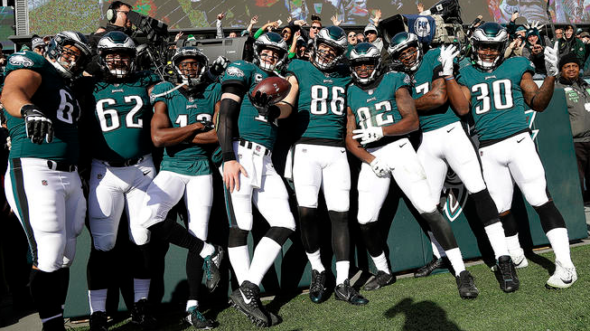

- Home
- Super Bowl
- 2018 Draft
- Upcoming Free Agents
The 4th Quarter
About Us

- Here at the 4th Quarter we strive to bring everything Eagles, whther it's during the heart of the season or if it's spring and we are dying just to get to the regular season.
- We will bring you live content including game higlights, exclusive player insight and interviews. We also will have a weekly podcast with Head Coach Doug Perderson
- Each week will breakdown down the film of each upcoming opponent including our game day picks brought to live from our podcast
- Follow us on Instagram & Snapchat using the #4thQuarter. You can also follow us on our Facebook page www.facebook.com/4thQuarter
Around the NFL
- Talk about the rest of the NFL in here. Following the Eagles' closest rivals? Want to talk about other games? Have some news from other teams around the NFL and free agency? Discuss here.
- We ask that you please review other threads before starting new ones to keep things organized, and we'd like to promote good conversation, so please post in a mature manner -- leave the personal attacks and childish comments out of here.
Lincoln Financial Field: The Ins and Outs
- This forum is for everything that deals with Lincoln Financial Field. Are you a season ticket holder, or are you looking for tickets? What do you like or dislike about the Linc? Have you been to other events? Have any interesting tailgating stories from the South Philly sports complex? Organizing any get-togethers in the parking lot? Got any recipes for the pregame meal? Talk about everything related to the gameday atmosphere in this forum!
- Please, please no fights or other unruly behavior. Show some class and make the birds proud
Eagles Fans All Around the World!
- Live outside the Philadelphia area but love the Eagles? This is the place to find other fans from your city, state or country! Looking for bars in a certain area so you can see the game and meet other Eagles fans? Planning to catch an Eagles road game? Talk about it here!
- Post your favorite Eagles pics and videos to have a chance to have it posted to our fan page!
Ask the 4th Quarter
- We have covered the eagles since 1997 so if there are any questions about the team or the game itslef feel free to reach out to us and we will respond back in a timely fashion to your questions!
- Ask questions and enjoy the back and forth with the Eagles Insider
Feel Free to visit the below sites for more Eagles info!